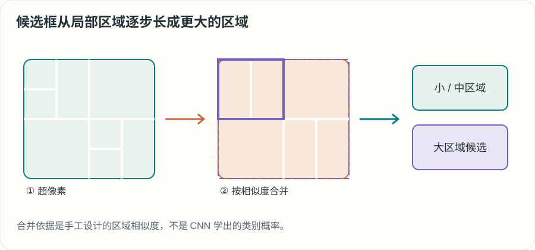
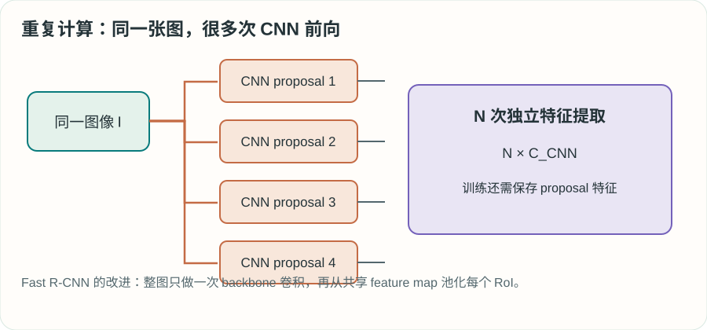

CHAPTER 16 · 目标检测
R-CNN：把 CNN 特征带进候选区域检测
从整张图里找出物体，不只是分类一张图片。R-CNN 将候选区域、CNN 特征、类别 SVM 与框回归串成一条检测流水线，也暴露了重复计算的根本瓶颈。
检测为什么先提出候选区域？
分类器回答“这张图里有没有猫”，检测器必须同时回答“猫在哪里”。如果直接在所有位置、尺度和长宽比上运行分类器，搜索空间会非常大；如果只用一个固定窗口，又会错过尺寸和姿态变化的物体。R-CNN（Regions with CNN features）把这个问题拆成两步：先由候选区域算法提出可能包含物体的位置，再让高容量 CNN 对每个候选区域进行识别。
这是一种 proposal-based / two-stage 思路。第一阶段不判断具体类别，只尽量覆盖可能的物体区域；第二阶段才判断类别并修正位置。候选区域可以有大量背景框，召回率与精确率的权衡从第一步就开始影响最终结果。

Selective Search：先分割，再逐步合并相似区域
2014 年 R-CNN 论文使用 Selective Search 作为候选区域来源。它不是一个端到端学习的神经网络，而是建立在超像素（superpixel）之上的分层分组算法：先把图像过分割成小区域，再根据颜色相似度、纹理相似度、区域大小和合并后填充程度等线索，贪心地把相邻区域合并。合并过程会形成不同尺度的区域候选，尽量覆盖物体的局部与整体。

“Selective”并不意味着它已经知道哪个框是猫。候选框是类别无关的，可能覆盖物体、背景、多个物体或物体的一部分。R-CNN 论文的测试流程使用 fast mode，每张图大约生成 2000 个 region proposals；这是该历史配置的量级，不是所有 Selective Search 参数下的固定输出数。
R-CNN 的四个计算阶段
原始 R-CNN 在测试时先运行 Selective Search，然后把每个候选区域按其外接框裁切并 warp 到 CNN 所需的固定尺寸。论文使用 CaffeNet/AlexNet 风格的 CNN：mean-subtracted 的 227×227 RGB 输入经过 5 个卷积层和 2 个全连接层，得到 4096 维特征。对每个类别分别训练线性 SVM，对候选框打分；再应用类别独立的 greedy NMS，并用 bounding-box regressor 修正定位。
这里有三个不同的“框”：Selective Search 给出的初始 proposal、CNN/SVM 判断后保留的 detection，以及回归器输出的 refined box。候选区域不是最终答案，分类得分也不等于定位精度。
r 是候选区域，f 是 CNN 特征提取器；z 为该候选区域的固定长度特征向量。
论文的关键变化是把 CNN 学到的高层特征用于 region-level recognition，而不是依赖手工 HOG/SIFT 特征。它证明了分类任务中学到的卷积表示经过检测数据微调，可以有效迁移到物体定位。
训练不是一个统一的端到端损失：原始 R-CNN 的多阶段流程
原始训练分成若干独立步骤：先在 ImageNet 分类任务上预训练 CNN，再用检测数据的候选区域对 CNN 进行 fine-tuning；之后从 CNN 特征训练每类一个线性 SVM；最后再训练边界框回归器。细节上，微调阶段的 softmax 分类头与后续 SVM 并不是同一个最终分类器：论文在检测时使用 class-specific SVM 替代 CNN 微调时的 softmax 输出。
框回归学习 proposal 到真值框的几何偏移。给定 proposal 的中心与宽高 ((x,y,w,h))，以及匹配真值框 ((x^*,y^*,w^*,h^*))，常用相对参数化为中心平移除以 proposal 尺寸、宽高取对数比例。它让模型学习“相对修正”，而不是直接输出图像坐标。
这里给出两项代表性偏移，y 与 h 方向同理。它是框回归常用参数化；原始 R-CNN 的线性回归器具体训练细节见论文补充材料。
这种流程能把各阶段单独调试，但特征要按 proposal 提取和缓存，SVM、回归器又要分别训练。每个训练/测试候选区域都要重复执行 CNN，存储、计算和工程管理成本很高。

可运行实验：框回归的编码与解码
下面只验证 proposal 与目标框之间的几何参数化，不实现 CNN、Selective Search 或 SVM。输入采用连续边界框 ((x_1,y_1,x_2,y_2))，先转换为中心宽高，再编码相对偏移，最后解码回目标框。该测试用于捕捉坐标定义、对数宽高和逆变换错误。
import math
def center_size(box):
x1, y1, x2, y2 = box
assert x2 > x1 and y2 > y1
w, h = x2 - x1, y2 - y1
return (x1 + w / 2, y1 + h / 2, w, h)
def encode(anchor, target):
ax, ay, aw, ah = center_size(anchor)
gx, gy, gw, gh = center_size(target)
return ((gx-ax)/aw, (gy-ay)/ah,
math.log(gw/aw), math.log(gh/ah))
def decode(anchor, delta):
ax, ay, aw, ah = center_size(anchor)
tx, ty, tw, th = delta
cx, cy = ax + tx*aw, ay + ty*ah
w, h = aw*math.exp(tw), ah*math.exp(th)
return (cx-w/2, cy-h/2, cx+w/2, cy+h/2)
proposal = (10.0, 20.0, 30.0, 60.0)
target = (12.0, 18.0, 34.0, 64.0)
delta = encode(proposal, target)
recovered = decode(proposal, delta)
assert all(abs(a-b) < 1e-9 for a,b in zip(target,recovered))
assert delta[0] > 0 and delta[1] < 0
print("box regression round trip:", recovered)R-CNN 的贡献与它留下的瓶颈
R-CNN 的贡献不是“Selective Search 很快”，而是证明了类别无关区域提议与 CNN 学习特征可以组合成高质量检测系统，并通过检测数据微调提升迁移效果。它也揭示了检测错误不只来自分类：候选框覆盖不足、区域 warp 的形变、CNN 对精确位置的敏感性、SVM 阈值和 NMS 都会影响最终结果。
但每张图约 2000 个候选区域意味着 CNN 被重复调用；CNN fine-tuning、SVM 与框回归器分阶段训练；缓存特征需要大量磁盘空间；候选生成仍依赖外部算法。Fast R-CNN 的核心改进是整图只算一次卷积特征，再通过 RoI Pooling 为每个 proposal 提取固定尺寸特征。下一步 Faster R-CNN 则把 proposal 生成也变成共享特征图上的可学习 RPN。
理解检查：R-CNN 的 2000 个候选区域是否意味着模型只预测 2000 个真实物体？
不是。它是候选窗口集合，可能含背景、重复区域和同一物体的多个不同框；后续分类、回归和 NMS 才决定最终检测结果。
原始论文与技术文档
文中算术与代码示例为教学构造，不是完整 benchmark 复现；历史模型结论仅在对应论文的数据、实现和评估协议下成立。